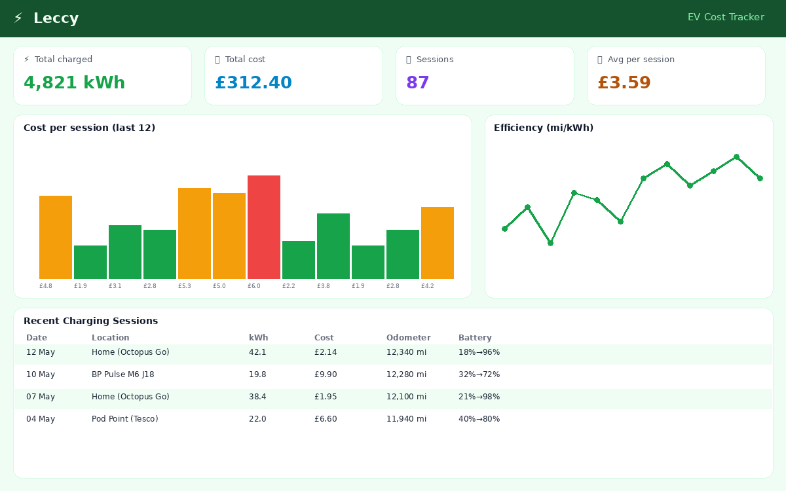
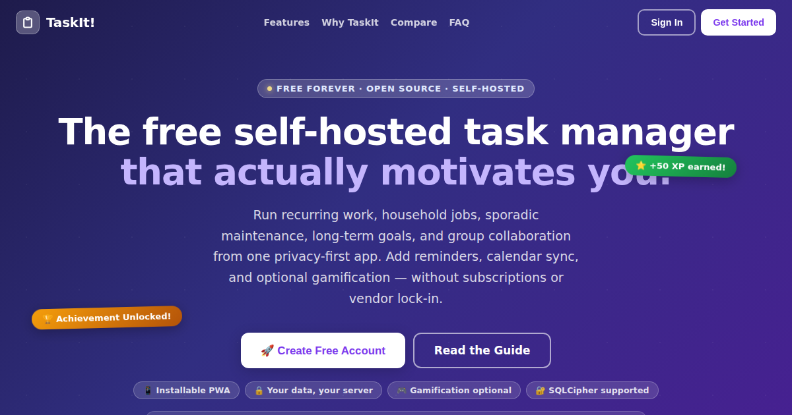
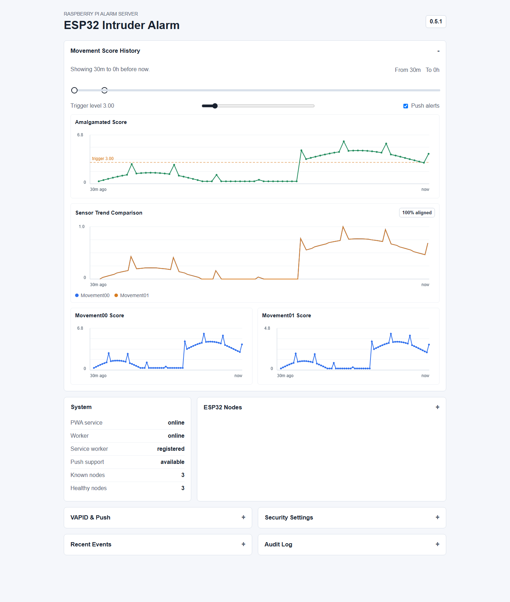
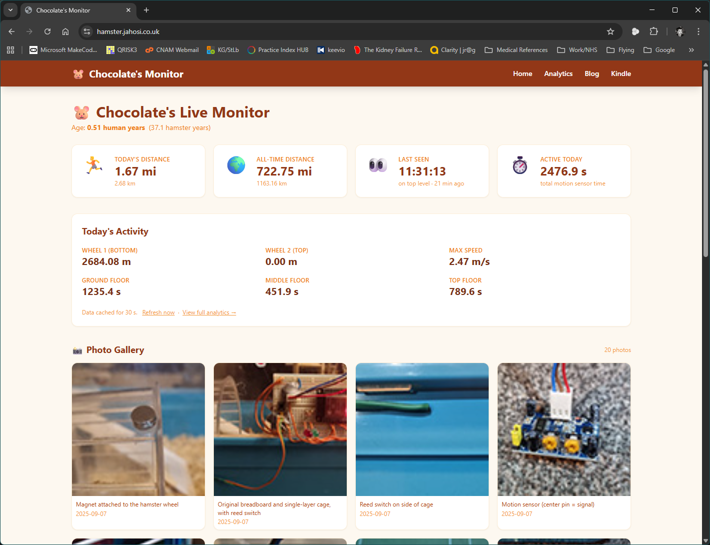
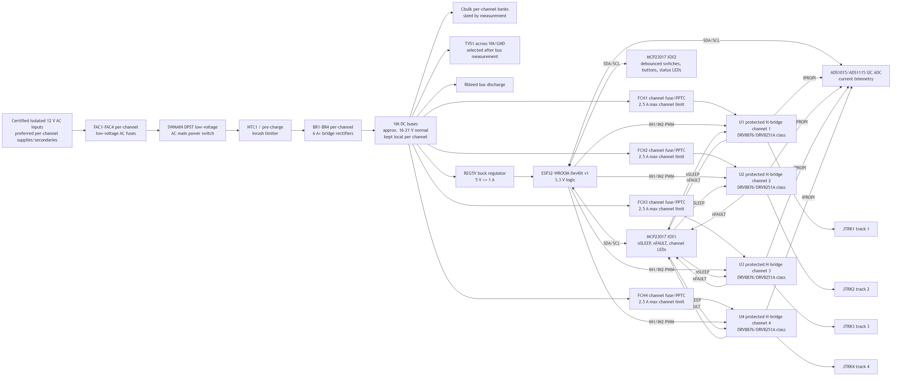
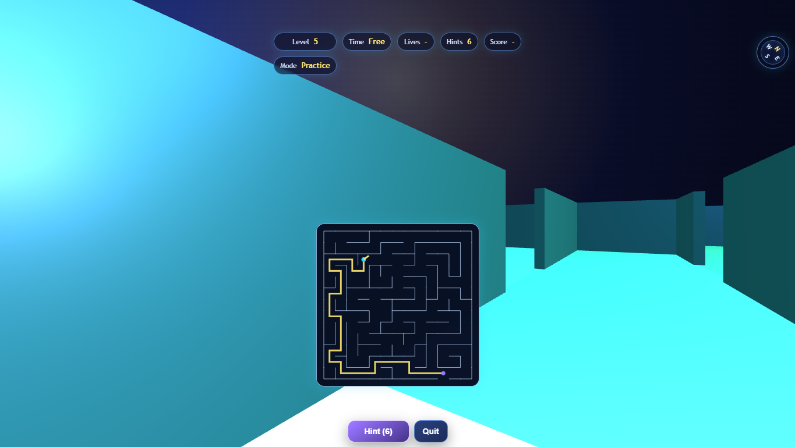

Portfolio
Dr James Rowson
Welcome to my portfolio. I'm in the process of adding projects I've made, and ongoing projects, to this site, so do keep checking back!
AI Assistants
BlanderQA
Blender 4.0 tutorial Q&A with official-source answers, multiple workflow comparisons, accessibility controls, and exportable chat.
Blender5QA
Blender 5.0 tutorial Q&A with official-source answers, topic lookup, workflow comparisons, privacy warnings, and server-side AI calls.
SocialQA
Adult social care funding Q&A for England, with constrained official-source answers, local signposting, accessibility controls, and exportable chat.
UnityQA
Unity Engine learning assistant with official-resource lookup, workflow comparisons, topic presets, and guarded source-constrained chat.
Practical Tools
Jahosi API
Separate TypeScript backend gateway for source-scoped AI products, admin settings, health checks, SQLCipher storage, and server-owned integrations.

Leccy
EV charging cost tracker with analytics, tariff management, and advanced metrics like battery health proxy and GOM accuracy. Installs as a PWA on Android and iOS.
Qglimpse
Institution-focused visitor insight platform with kiosk runtime, question scheduling, demographic-aware analytics, and role-based administration.
splash!
Interactive playpool/hot-tub planner with guided quick start, Open-Meteo weather, 48-hour hourly forecasting, 3-day simulation, scenario-sensitive pH chemistry guidance, and formulas/references appendices.
.png)
Tasker
Anonymous timer and record-keeper that helps teams understand where working time goes without collecting names or personal work details.

Taskit
Cross-platform task management app with group collaboration, recurring tasks, calendar feed, and an Android app — all self-hosted with an encrypted database.
Safety & Privacy
pingme.help
Privacy-first readiness sharing app with trusted follower codewords, one-read burn messages, PWA support, and security-focused admin tooling.
TLSCheckin
Self-hosted TypeScript status checker with rapid public check-ins, encrypted storage, Turnstile protection, secret links, SMS options, and admin controls.
TLS Secure Messaging
Self-hosted, encrypted two-person chat with view-once media, video recording, emoji reactions, 2FA, and a full admin panel. Installs as a PWA.
Archives & Heritage

Aviation Museum Archives and Gallery
Node.js image gallery hosting a local Aviation Museum's archive photography.

James' Hovercraft Site
Long-running hovercraft archive and custom CMS preserving craft, route, hoverport and image history.
.png)
Museum Volunteer Management System
TypeScript, React, Tailwind CSS and Prisma proof of concept for organising museum volunteers, staff, trustees and teams.
Hardware & IoT

ESP32 Intruder Alarm
Privacy-preserving Wi-Fi CSI alarm prototype with ESP32 receiver/sender firmware, Raspberry Pi services, calibration controls, and a PWA dashboard.

Hamster Activity Logger
Tracks exercise and activity patterns using ESP32 sensing, Raspberry Pi collection and charts over time.

RailwayController
ESP32-hosted PWA and safety-first hardware architecture for a four-channel OO-gauge model railway PWM controller.
Games & Mobile Experiments

Labyrinth
Single-file first-person maze game originally designed for Taskit!, with auto-generated levels, adaptive timers, hints, lives, scoreboards, mobile controls, and standalone modes.
LabyrinthApp
Native Android Kotlin foundation for turning the Labyrinth web game into an offline, Play-ready mobile game rather than a WebView shell.
Project AI
Github/Copilot-generated animated effects, glass cards and interactive gallery experiment.
Spherify
Local-first Android PhotoSphere and Tiny Planet prototype with ARCore-guided capture evidence, library tools, and OpenCV stitching direction.
Social Links